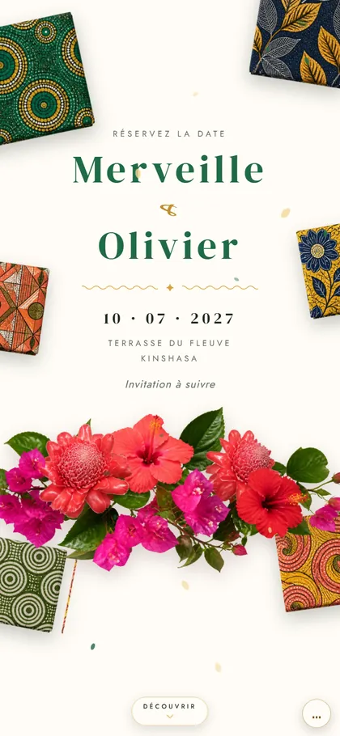
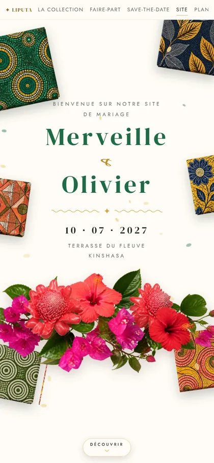
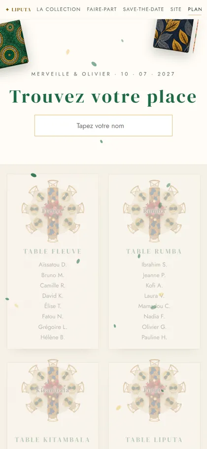
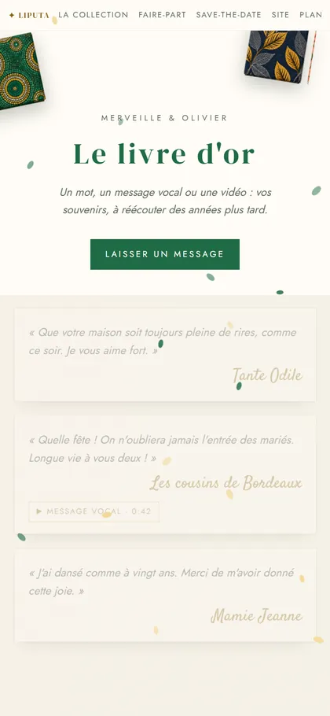
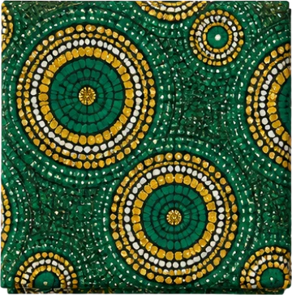
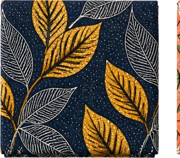
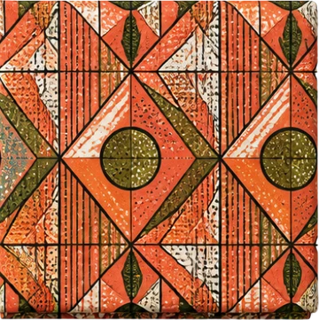
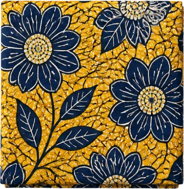
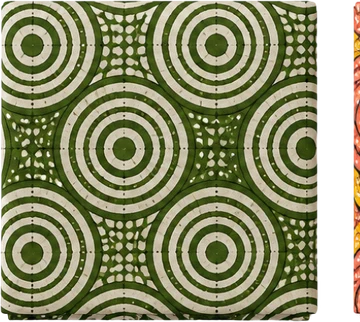
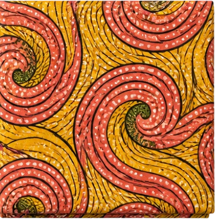

Save-the-datePour réserver la date
Site du mariageProgramme, lieu, hébergement, réponse
Plan de tableChacun trouve sa placeMur photoLes photos des invités, en direct
Livre d'orMots, voix et vidéosMaison Vivat · Collection réaliste
Le fleuve qui brille au coucher du soleil, les familles vêtues de leur pagne, la première rumba qui fait se lever toute la salle. Une fête élégante et chaleureuse, où la joie se danse à deux.
Pagnes wax, raphia kuba et roses de porcelaine : un mariage au bord du fleuve, avec un clin d'œil au liputa.






Touchez un visuel pour l'ouvrir

Save-the-datePour réserver la date
Site du mariageProgramme, lieu, hébergement, réponse
Plan de tableChacun trouve sa placeMur photoLes photos des invités, en direct
Livre d'orMots, voix et vidéosVoir le faire-part tel que le reçoit Aminata, une invitée